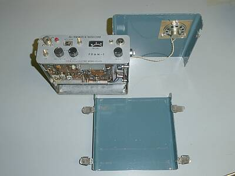
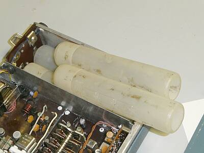
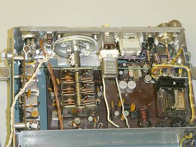
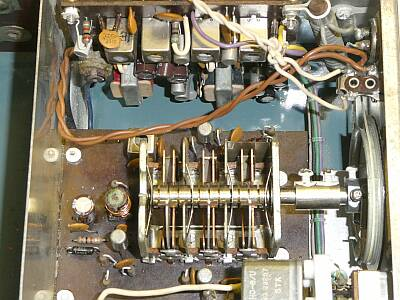
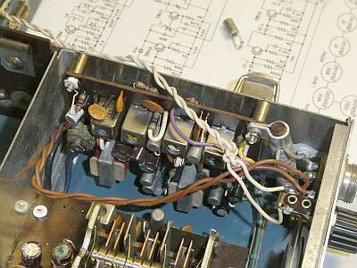
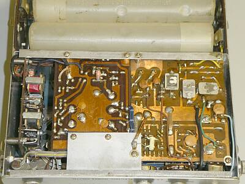
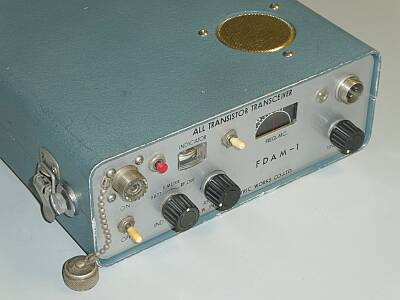
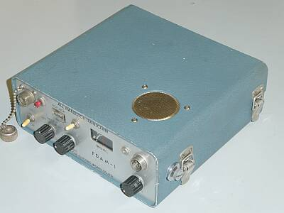
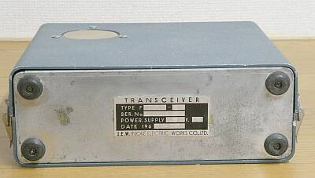

 |
上下ケースが、パッチン錠でこのように開きます
蓋を開けるのに、ドライバなど工具は不要です |
 |
内臓乾電池は、単一型１２本
外部電源接続端子はありません
送信終段には、１８Ｖ
その他ステージは１３．５Ｖ
受信関係は、９Ｖ
３種の電圧供給がなされています
電池を無駄なく使い、利得の無さは電圧で稼ぐというような設計でしょう
苦心の跡を感じます
消費電流は、極めて少なく設計されています
余談ですが、＋接地です |
 |
基板上面です
後ろからフロントパネル裏側を写しています
基板は、左から
受信ＩＦ－ＡＦ基板（縦に立っている）
受信ＲＦ－ＭＩＸ基板
送信基板（１枚基板で、奥側に変調部）
送受切替リレーが見えます
送信クリスタル、オリジナルは送信基板直付け１個のところ、フロントパネルに増設したＳＷで２個切替ができるよう改造されています |
 |
横から写しています
上に立って見える基板は、受信ＩＦ－ＡＦ基板
受信基本設計は、既存の６石AMラジオ（受信周波数１．９MHｚに固定）に、新たに設計したＲＦ部、すなわち自励式コンバータを後付けしたものと考えられます
そのＲＦ部は、ゆったり設計です
中央は、受信コンバータ用に採用された３連ＶＣで、アンテナコイル、ＲＦ同調コイルの同調を変換用発振と合わせて行なうようになっています
ダイヤルの減速は、お決まりの糸掛け式です
ＶＣの下にＲＦ増幅Ｔｒ、後ろに第一局発Ｔｒが見えます |
 |
受信ＩＦ－ＡＦ基板です（６石ＡＭラジオ！）
基板左端の白く見えるトランジスタが、２ＳＡ４００
回路図の上に置かれているのが壊れていた、２ｎｄＭｉｘ２ＳＡ１４２
手前右にフロントパネルに後付けされた外部スピーカー（イヤホン）端子が見えます |
 |
基板裏側です
左から
受信ＩＦ－ＡＦ基板（縦型に取り付けられている）
受信ＲＦ－Ｍｉｘ基板
送信基板は１枚で、トリマが見えているあたりがＲＦ部
その下が変調部です
|
 |
フロントやや左上より写したもの
スピーカーはこんな位置に取り付いています
ロッドアンテナの内臓は無く、アンテナ接続先としてはＭ型接栓のみです |
 |
フロントやや右上から写したもの
パッチン錠は、電池交換には楽そうです |
 |
リアパネル
なにも入出力する端子はありません |
消費電流は、極めて低く設計されています
送受信のAFアンプを兼用するのが一般的ですが、本機では送受分けられています
受信は、９Vの電源供給一本です
送信に関しては、１３．５Vと１８Vの２系統が使用されています
１８Vは、終段の２ＳＣ３２パラに供給、他は１３．５Ｖが供給されるようになっています
トランジスタもゲルマ型２ＳＡ／２ＳＢ型式が多い中、送信終段はシリコン型２ＳＣ３２の採用ですが、パワーを出すには１８Ｖが必要だったのでしょう |
うんもすんも言わない・・・
電池ホルダには、はんだ付け不良があり
受信基板にあっては、２ｎｄＭｉｘトランジスタ（２ＳＡ１４２）がＥ－Ｃ間がショートしていました
幸いストックに２ＳＡ４００が残っていて、代用ができました
その結果、なにがしかの受信は出来るようになったのですが、今度はＩＦの発振に悩まされました
一度発振すると、電源を入れなおさないと正常動作に戻りません
前オーナー？が、新たに交換したと思われるデカップリングコンデンサの半田付け不良
そして、ＩＦ段の中和Ｃの問題
１．５Ｐのところに１０Ｐ
２．またもうひとつの５Ｐは断線
ここまでの対応では、まだ発振が生じて動作が不安定、同調を取るとビートをかけて聞いているような状態になる
そこで、これらのＣの取り付け方の変更など・・・まさにアナログ対応です！
同調は、４５５ＫＨｚ、１．９ＭＨｚと低い側から調整を進めました
なんとか動作を落ち着かせることができました
送信は、特に何の問題もなく動作しました |
|
調整の結果
送信
５０.２２０ＭＨｚと５０.５００ＭＨｚ 内蔵されていた２クリスタルで、０.５Ｗ弱
受信
３０％変調 ２μV入力で、S/N８ｄｂ（この当時としては、かなり高感度ではないかと思います）
得られる音量も十分です
電源が３系統・・・単一電池１２本を用意しての修理対応という元気がなく、３台の定電圧電源を使って対応しました
幸いに回路図があったおかげで、修理復旧ができました |